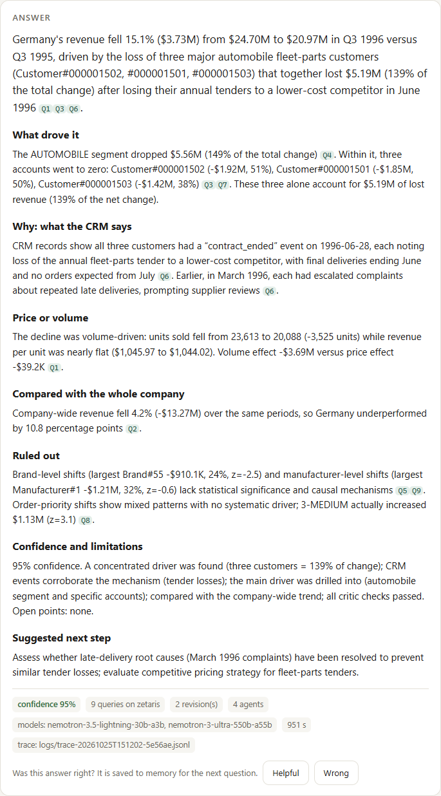
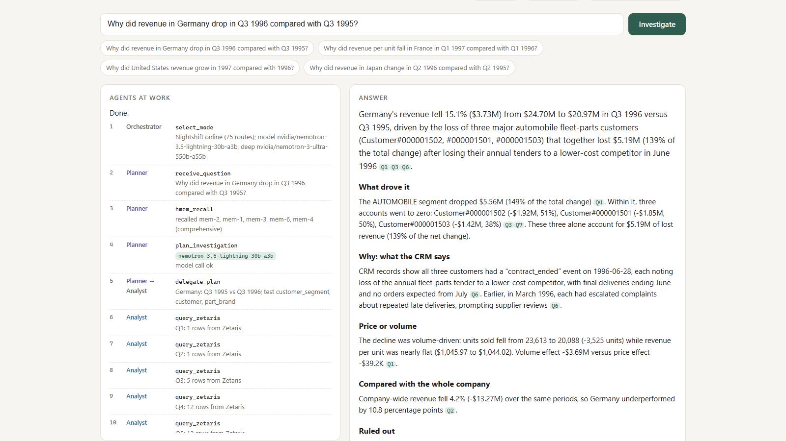

Four agents investigate revenue changes across your ERP and CRM, and cite the SQL behind every claim.
of FP&A time goes on insights. The rest is mostly collecting and validating data.
FP&A Trends Survey 2024 · 2,400+ finance practitionershold the answer. The ERP knows what moved. The CRM knows why: the lost tender, the new discount, the contract won.
Dashboards show what changed. The why is a day of manual work, or a guess.
Why did revenue in Germany drop in Q3 1996 compared with Q3 1995?
Revenue fell 15.1% ($3.73M) Q1, almost all lost volume in the Automobile segment Q4. Three accounts went to zero Q3. The CRM shows they lost their annual fleet-parts tender to a cheaper competitor on 28 June, after escalating late deliveries in March Q6.
confidence 95% · 9 queries on Zetaris · 2 revisions · Nemotron

Recalls past findings from H‑MEM. Sets the periods and focus. Ranks hypotheses: what explained earlier changes goes first.
SQL in Zetaris: totals and a price/volume split, a company baseline, breakdowns scored against the trend, a drill-down, CRM events.
Recomputes every figure from its query. 8 checks plus a Nemotron challenge. Sends the Analyst back with new queries, or approves.
A cited answer with a confidence score and its reasons. Stores what explained the change in H‑MEM.
Critic ⇄ Analyst, up to 2 revisions with new SQL. Invalid model JSON retries; an unreachable model falls back to computed claims.
The report may only quote figures from approved claims and their queries. No CRM cause? Confidence drops, and the report says why.
A JSONL trace of every step, handoff, query and model call. The UI streams it live, and every [Qn] opens its SQL and rows.
ERP and CRM Postgres databases registered as causa_erp and causa_crm by one SQL script. Every query goes to POST /sql-editor/sqls/run. The CRM step joins account events to ERP customers in one federated query.
Investigation memory. Findings are stored with driver: and weak: tags. The next plan recalls them and reorders its hypotheses, and Helpful/Wrong feedback updates the trust ledger. Conformance 13/13, plus feature tests.
The only model endpoint: /v1/chat/completions with meterless-app: causa and meterless-scope: user. The token is read from the runtime itself.
3.5 Lightning 30B-A3B plans, drafts and critiques. 3 Ultra 550B-A55B writes the report. Every trace event records the model that answered.
| Question | What Causa found | Confidence | Queries |
|---|---|---|---|
| Germany, Q3 1996 vs Q3 1995 | −15.1%: three Automobile accounts lost a fleet-parts tender to a cheaper competitor (CRM, 28 June) | 95% | 9 |
| France, Q1 1997 vs Q1 1996 | Revenue per unit −9% after a winter volume-discount programme; more units, less revenue each (CRM: price renegotiated) | 85% | 11 |
| United States, 1997 vs 1996 | +6.5%: two Machinery customers won in December 1996 added $15.6M while the rest of the business slipped | 95% | 8 |
| Japan, Q2 1996 (control) | −16.1% across many accounts, with no contract, tender or pricing event in the CRM, so the cause is reported as not established | 70% | 10 |
The Critic re-derives each figure from its cited query and blocks the answer until it matches. The Reporter can't introduce a new number.
Zetaris federation takes the agent from an ERP revenue drop to the CRM events of the same accounts in one query.
H-MEM turns each answer into a prior for the next plan. User feedback raises or lowers how much it trusts that prior.
No CRM evidence behind a driver? The confidence drops and the report says the cause is not established, instead of inventing a story.
Ask why a number moved. Get an answer you can check.
github.com/ParasAdlakha/causa
Recalls H-MEM, ranks hypotheses
Tests each one with SQL in Zetaris
Recomputes every figure, asks for more
Cited answer, confidence, memory
German revenue fell 15.1% Q1: three Automobile accounts lost their fleet-parts tender to a cheaper competitor on 28 June Q6. Confidence 95%.
All reasoning on NVIDIA Nemotron through Meterless Nightshift. ERP and CRM federated in Zetaris. Every step, query and model logged.
